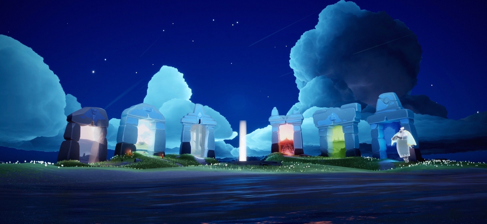

《光遇》游戏中的七个地图各自承载着不同的剧情和寓意，以下是每个地图的剧情介绍：
1. 晨岛（Isle of Dawn）：
晨岛是玩家进入游戏后的第一个地图，象征着人类的起源和纯洁无暇的初心。在这里，玩家将遇到第一个光之翼并获得斗篷，开始学习如何寻找光之灵、收集光之翼以增强飞行能力，并学习飞行技巧。
2. 云野（Daylight Prairie）：
云野是玩家冒险旅程中的第二个地图，代表着人类成长的青春期和与同龄人的交友经历。在这里，先祖与光之生物建立了和谐的关系，动物们赋予了先祖飞行的能力，象征着人类与自然的和谐共生。
3. 雨林（Hidden Forest）：
雨林是玩家旅程中的第三个地图，代表着青少年时期的成长挑战。在这里，玩家首次遇到可能造成伤害的生物或环境因素，如雨水会消耗斗篷能量，黑暗螃蟹可能将玩家击倒并导致失去光之翼。
4. 霞谷（Valley of Triumph）：
霞谷是玩家探索的第四个地图，代表着成年期的成就和荣誉。这个地图通过古城市的遗迹，展现了光之王国历史的鼎盛时期。玩家将在这里体验滑行和飞行比赛，并在终点的竞技场结束比赛。
5. 暮土（Golden Wasteland）：
暮土是玩家遇到的第五个地图，代表着中年时期。在这里，玩家首次遭遇黑暗冥龙和大量的黑暗螃蟹。这个地图还有被污染的水域，会对玩家的光能造成持续伤害。
6. 禁阁（Vault of Knowledge）：
禁阁是玩家遇到的第六个地图，代表着衰老或老年时期。这个地图包含多个层次和分支区域，玩家需要完成多个谜题才能逐层上升。有两个大门需要四名玩家共同打开，还有一个区域需要特殊的斗篷才能进入。
7. 暴风眼（Storm Eye）：
暴风眼是玩家旅程中的最终挑战，代表着对自我牺牲和重生的考验。玩家在这里需要穿越狂风和巨石，躲避冥龙，最终抵达伊甸之眼，拯救被困住的灵魂，并将他们送回天际。完成这一过程后，玩家将经历重生，与过去的自己和解，并在星河中与曾经的旅伴重聚。
每个地图不仅提供了独特的游戏体验，还通过剧情和环境设计传达了不同的人生阶段和情感体验。
